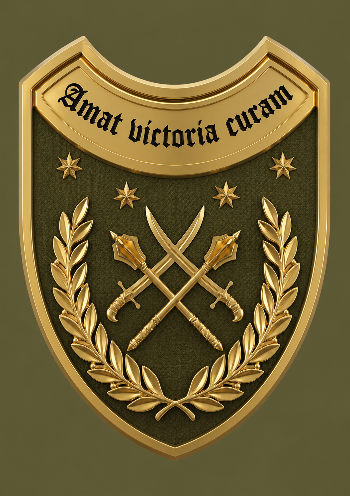

Телефонний довідник НАЧБОЇ
Начальники управлінь (відділів) підготовки
17 армійський корпус
19 армійський корпус
20 армійський корпус
30 КМП
ОТУ «Одеса»
7 КШР
Особовий склад управління підготовки
ЧБП

Начальник відділу підготовки 17 армійського корпусу — полковник Ганчарюк Олег Вікторович · 063 649 52 30
Начальник відділу підготовки 19 армійського корпусу — полковник Мадяр Юрій Федорович · 096 933 72 80
Начальник відділу підготовки 20 армійського корпусу — підполковник Нагуляк Богдан Михайлович · 093 490 12 22
ТВО начальника управління підготовки 30 корпусу морської піхоти — полковник Тоненчук Олександр Сергійович · 068 047 96 50
Начальник відділу підготовки та відновлення боєздатності ОТУ "Одеса" — полковник Лосєв Володимир Васильович · 098 541 62 81
Начальник управління підготовки штабу 7 КШР — полковник Діброва Андрій Анатолійович · 095 595 84 52
⬅ Назад
Частини безпосереднього підпорядкування
ТВО начальника відділення підготовки 118 омбр — капітан Полянський Руслан Володимирович · 098 485 59 67
Начальник відділення підготовки 151 омбр — підполковник Япринцев Володимир Андрійович · 099 783 48 30
Начальник відділення підготовки 128 огшбр — підполковник Анохін Олександр Валерійович · 063 495 09 25
Начальник відділення підготовки 128 овмбр — капітан Паславський Денис Олександрович · 067 365 31 36
Начальник відділення підготовки 110 омбр — підполковник Козлов Євген Олександрович · 099 268 97 07
Начальник відділення підготовки 54 оабр — підполковник Стеблина Олексій Сергійович · 066 438 89 82
Частини оперативного підпорядкування
Начальник відділення підготовки 65 омбр — підполковник Стрілець Олег Миколайович · 067 630 13 95
Начальник відділення підготовки 61 омбр — підполковник Девотченко Артем Володимирович · 067 871 76 47
Начальник відділення підготовки 142 омбр — підполковник Гетьман Володимир Володимирович · 050 321 02 66
Начальник відділення підготовки 153 омбр — капітан Кернозенко Сергій Сергійович · 093 433 31 74
ТВО начальника відділення підготовки 154 омбр — капітан Гонтаренко Данило Дмитрович · 093 635 89 96
Начальник відділення підготовки 44 оабр — підполковник Луцків Володимир Романович · 068 514 41 86
Начальник відділення підготовки 241 обр ТрО — підполковник Лофицький Євгеній Вікторович · 067 632 76 16
Начальник відділення підготовки 260 обр ТрО — майор Кріль Ілля Юрійович · 068 812 60 41
Начальник відділення підготовки 5 ошбр — підполковник Близнюк Олексій Андрійович · 063 502 21 14
Начальник відділення підготовки 253 ошп — майор Клименко Олег Олексійович · 050 759 82 97
Начальник відділення підготовки 225 ошп — старший лейтенант Курнаков Олександр Сергійович · 067 980 17 22
Начальник відділення підготовки 92 ошбр — підполковник Брагін Володимир Володимирович · 068 532 67 78
Начальник відділення підготовки 1 ошп — підполковник Кулішов Геннадій Вікторович · 097 212 21 28
Начальник відділення підготовки 475 ошп — майор Зубенко Олексій Олексійович · 096 965 12 10
⬅ Назад
Частини безпосереднього підпорядкування
Начальник відділення підготовки 28 омбр — капітан Величко Владислав Вікторович · 093 726 32 70
Начальник відділення підготовки 100 омбр — підполковник Сорокін Володимир Анатолійович · 066 576 60 16
Начальник відділення підготовки 117 овмбр — підполковник Охримчук Олександр Олександрович · 096 121 91 12
Начальник відділення підготовки 44 овмбр — підполковник Войтов Євген Володимирович · 098 104 46 94
Начальник відділення підготовки 61 омбр — підполковник Девотченко Артем Володимирович · 067 871 76 47
Начальник відділення підготовки 40 оабр — підполковник Чигирик Ігор Олександрович · 095 361 32 91
⬅ Назад
Частини безпосереднього підпорядкування
Начальник відділу підготовки 17 овмбр — майор Кондратюк Олексій Васильович · 063 337 04 27
Начальник відділення підготовки 23 омбр — підполковник Пашко Василь Іванович · 050 772 11 79
Начальник відділення підготовки 33 омбр — майор Буйнаков Максим Сергійович · 068 054 14 07
Начальник відділення підготовки 31 омбр — підполковник Терех Андрій Вікторович · 095 504 92 28
Начальник відділення підготовки 141 омбр — підполковник Олійник Микола Володимирович · 097 747 48 83
Начальник відділення підготовки 60 оабр — підполковник Роздольський Богдан Михайлович · 098 989 48 59
Начальник групи підготовки 1226 обп — старший лейтенант Журавльов Олексій Сергійович · 097 569 22 99
Заступник командира батальйону 533 обоо — капітан Бобко Михайло Володимирович · 067 740 83 71
Начальник групи підготовки 123 обз — старший лейтенант Титов Сергій Іванович · 066 678 95 96
Начальник групи підготовки 519 орвб — капітан Баранюк Олег Миколайович · 068 071 81 22
Заступник командира батальйону 98 оптб — підполковник Голубицький Юрій Германович · 075 693 47 76
ТВО заступника командира батальйону 128 обмз — старший сержант Оторвін Вадим Павлович · 068 558 31 23
ТВО начальника групи підготовки 23 орб — старший лейтенант Зенковський Олексій Валерійович · 066 561 77 88
Начальник групи підготовки 423 оббс — лейтенант Товстопят Олександр Васильович · 068 981 43 47
Начальник групи підготовки 1201 озрдн — старший сержант Соколов Сергій Петрович · 098 268 93 35
Частини оперативного підпорядкування
Начальник групи підготовки 433 оббс — старший лейтенант Дунаєв Дмитро Юрійович · 097 354 43 11
Начальник відділення підготовки 110 омбр — підполковник Стороженко Олег Володимирович · 097 073 44 41
Начальник відділення підготовки 37 обрмп — підполковник Кравцов Микола Володимирович · 095 587 62 45
Начальник відділення підготовки 67 омбр — підполковник Колесник Ігор Ігорович · 068 810 06 33
Начальник відділення підготовки 160 омбр — майор Коростель Вадим Петрович · 096 604 22 61
⬅ Назад
Окремі контакти 30 КМП у наданому довіднику поки не наведені.
⬅ Назад
Частини безпосереднього підпорядкування
Начальник відділення підготовки 108 обр ТрО — підполковник Мешко Сергій Володимирович · 067 637 25 25
Начальник відділення підготовки 122 обр ТрО — старший лейтенант Зубач Назарій Васильович · 097 302 64 33
Начальник відділення підготовки 123 обр ТрО — майор Бабенко Валентин Анатолійович · 050 458 49 61
Начальник відділу бойової та спеціальної підготовки 2 Прикз — полковник Мельник Ігор Костянтинович · 098 586 05 99
Начальник відділу бойової та спеціальної підготовки 17 Прикз — полковник Гнатишин Олег Борисович · 067 986 50 05
Начальник відділу бойової та спеціальної підготовки 25 Прикз — підполковник Сокорчук Петро Васильович · 067 199 96 20
Начальник відділу бойової та спеціальної підготовки 26 Прикз — підполковник Дудченко Антон Володимирович · 050 042 02 00
Начальник відділу бойової та спеціальної підготовки 18 об НГУ — майор Горбатіков Роман В’ячеславович · 096 559 94 46
Начальник відділення бойової та спеціальної підготовки секції підготовки 11бр НГУ — підполковник Савчук Станіслав Іванович · 067 943 34 18
Начальник секції підготовки ТГр “ХАДЖИБЕЙ” — майор Дмитрук Євген Олегович · 099 250 84 01
Начальник секції підготовки СО “Очаків” — Капітан 3 рангу Форманюк Євгеній Васильович · 063 899 04 44
⬅ Назад
Частини безпосереднього підпорядкування
Начальник відділення підготовки 61 омбр — майор Девотченко Артем Володимирович · 067 871 76 47
Начальник відділення підготовки 225 ошп — старший лейтенант Курнаков Олександр Сергійович · 067 980 17 22
Начальник відділення підготовки 92 ошбр — майор Брагін Володимир Володимирович · 068 532 67 78
Начальник відділення підготовки 154 омбр — майор Гонтаренко Данило Дмитрович · 093 635 89 96
Начальник відділення підготовки 44 оабр — підполковник Луцків Володимир Романович · 068 514 41 86
Начальник відділення підготовки 5 ошбр — підполковник Близнюк Олексій Андрійович · 063 502 21 14
Начальник відділення підготовки 142 омбр — капітан Гладков Максим Сергійович · 067 950 94 21
Начальник групи підготовки 87 обу — старший лейтенант Льовін Володимир Дмитрович · 093 115 30 31
Начальник групи підготовки 237 оббпс — старший сержант Саркисян Давид Саркісович · 066 463 50 68
Начальник групи підготовки 231 обл — старший лейтенант Вовк Олексій Вікторович · 050 198 73 07
⬅ Назад
Начальник відділу підготовки – ЗНУ — полковник Шуляк Сергій Сергійович · 067 342 20 82
Головний спеціаліст відділу підготовки — полковник Коваль Вадим Іванович · 050 517 00 09
Старший офіцер відділу підготовки — підполковник Крапивницький Сергій Володимирович · 097 289 12 77
Старший офіцер відділу підготовки — підполковник Лаврієнко Ярослав Сергійович · 098 631 32 32
Офіцер відділу підготовки — майор Медведєв Максим Валерійович · 063 553 93 19
Офіцер відділу підготовки — майор Повстюк Богдан Леонідович · 066 230 54 46
Штаб-сержант 2 категорії відділу підготовки — сержант Долганюк Анатолій Юрійович · 063 795 56 59
Начальник відділу планування та оперативної підготовки — підполковник Чучула Сергій Сергійович · 712 940 90 15
Номер потребує уточнення — посилання на WhatsApp не створено.
Головний спеціаліст відділу планування та опер. підготовки — підполковник Мельник Анатолій Іванович · 097 639 95 96
Старший офіцер відділу планування та опер. підготовки — підполковник Кичігін Роман Сергійович · 097 949 52 14
Старший офіцер відділу планування та опер. підготовки — підполковник Гусєв Андрій Володимирович · 098 855 75 32
Начальник групи ВВД — підполковник Коваленко Олександр Вікторович · 063 317 82 21
Офіцер групи ВВД — майор Литвин Андрій Олексійович · 063 486 16 03
Штаб-сержант 2 категорії групи ВВД — старший сержант Ковальчук Олександр Сергійович · 067 536 65 07
Начальник служби ФП та фізкульт. – спорт. реабілітації — підполковник Солошенко Дмитро Сергійович · 093 617 75 29
⬅ Назад
Частини безпосереднього підпорядкування
Начальник відділення підготовки 16 обрп — підполковник Макосов Микола Станіславович · 050 925 10 66
Начальник відділення підготовки 131 орб — лейтенант Дьяков Руслан Русланович · 063 568 86 86
Начальник відділення підготовки 306 оп РЕБ — молодший лейтенант Верламов Михайло Олександрович · 093 100 03 64
Начальник відділення підготовки 363 — майстер-сержант Макаревич Олексій Володимирович · 098 264 33 14
Начальник відділення підготовки 38 — майор Мороз Денис Владиславович · 068 748 71 19
Начальник відділення підготовки 7 опз — майор Шевченко Дмитро Анатолійович · 096 245 25 73
⬅ Назад